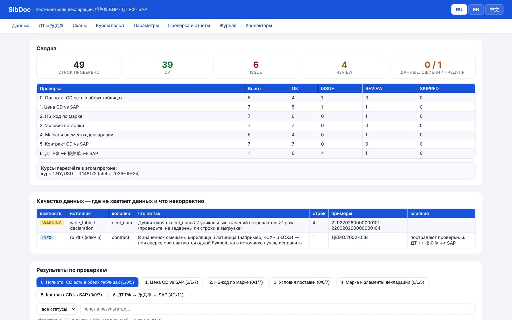
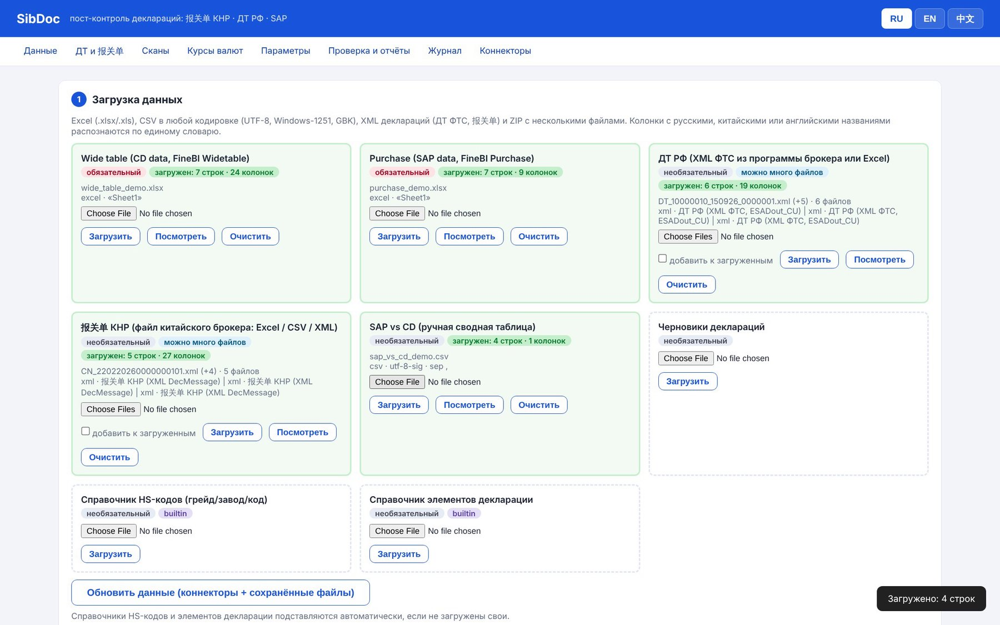
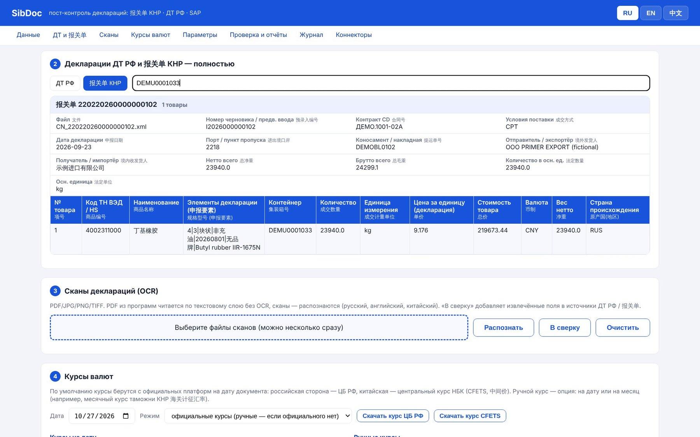
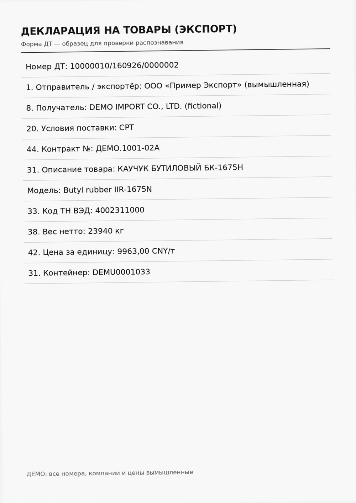
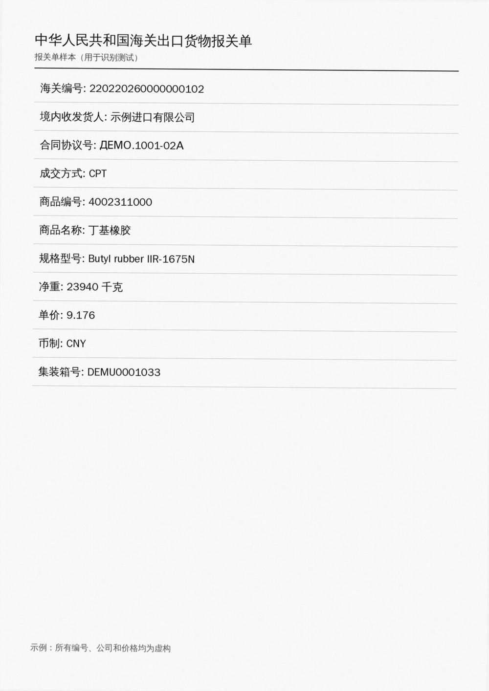
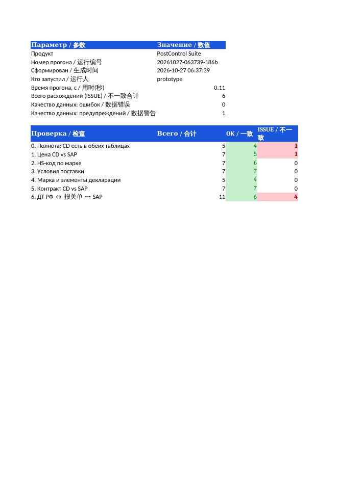
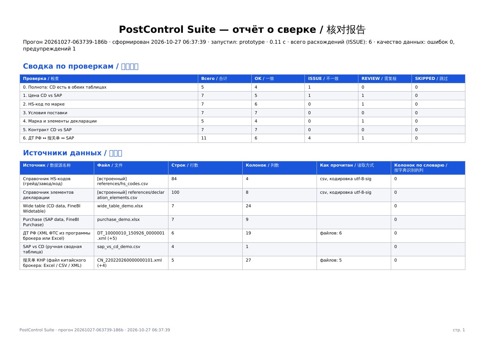
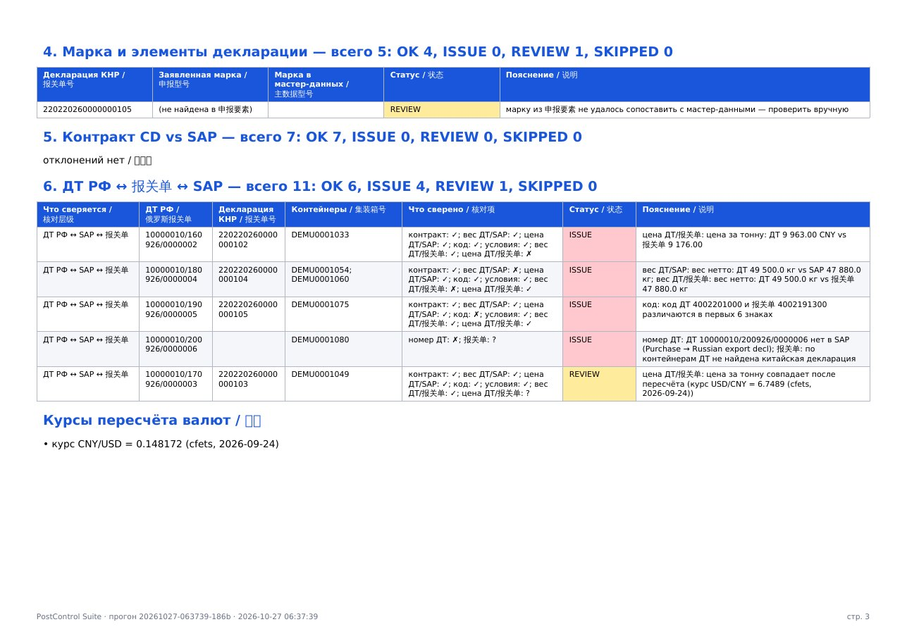

Товар идёт из России в Китай: российская экспортная ДТ с одной стороны, китайская импортная декларация с другой, учёт в SAP посередине.
Загрузили файлы — нажали одну кнопку — получили статус по каждой строке и отчёт на двух языках.




| № | Проверка | Что сравнивает | Правила |
|---|---|---|---|
| — | Качество данных | пустые колонки, текст в числах, дубли ключей, контрольная цифра контейнера ISO 6346, смешанные алфавиты, обрезанные номера | system.yaml |
| 0 | Полнота | все ли обязательные поля заполнены | completeness.yaml |
| 1 | Цена | цена SAP против декларации, с пересчётом валют и ценой за тонну | price.yaml |
| 2 | Код ТН ВЭД / HS | код товара против справочника и марки | hs_code.yaml |
| 3 | Условия поставки | Incoterms и место поставки | incoterms.yaml |
| 4 | Элементы декларации | заявленные элементы (申报要素) против эталонных | decl_elements.yaml |
| 5 | Контракт | основной контракт и допсоглашение, в т. ч. «склеенные» в одной ячейке | contracts.yaml |
| 6 | ДТ ↔ 报关单 ↔ SAP | один груз в двух декларациях и в SAP: вес, цена, валюта, условия; частичный выпуск — REVIEW | cross_border.yaml |
У каждой строки — статус и пояснение на двух языках. Например: цена в китайской декларации ниже, чем в SAP.



12 коннекторов описаны в настройках и выключены до получения доступов. У каждого — «Проверить» и «Забрать данные». Пароли — только в переменных окружения сервера.
| Этап | Что входит | Ориентир |
|---|---|---|
| 0. Закрыть | закрытый репозиторий без реальных данных, вход включён, правила — только администратору | 1–2 дня |
| 1. Проверки сделано в 2.0 | корректные проверки, автотесты, кодировки и листы, прогоны с номерами и историей | — |
| 2. Первые коннекторы | почта и XML ДТ, курсы ЦБ и КНР (есть), тариф КНР, уведомления, сканы в проверках, ночной прогон | 3–4 недели |
| 3. Новые функции | сверка веса и мест, валютный контроль, задачи на исправление, панель показателей, санкционный скрининг | 1–2 месяца |
| 4. Интеграции | 1С, ЭТРАН, Единое окно, китайские ERP, банки, ИИ-помощник в контуре клиента | по мере доступов |